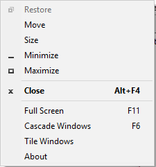
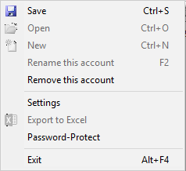
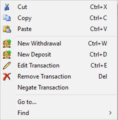
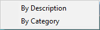
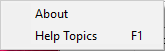
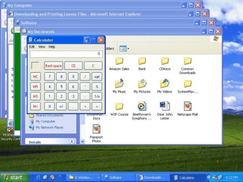
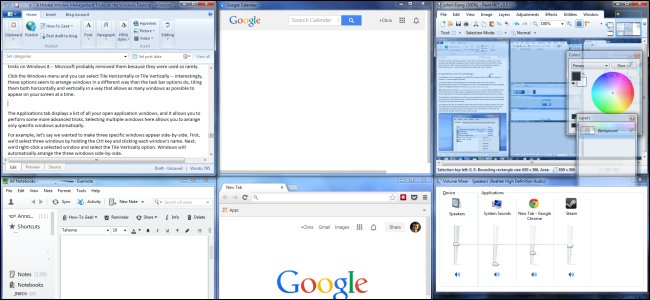

| System Menu |  |
| File Menu |  |
| Edit Menu |  |
| Help Menu |  |
System Menu
The system menu is one of the less obvious menus. In order to view the system menu, click on the icon in the titlebar, or right-click on the titlebar. The system menu will appear.
- Restore
- Restores the window to its original size. Only enabled when window is maximized.
- Move
- Moves the window.
- Size
- Resizes the window.
- Minimize
- Minimizes the window, so that it is now just an entry in the taskbar. To reopen the window, simply click its entry in the taskbar. (usually the bottom of your screen).
- Maximize
- Makes the window take up the entire screen (except for the titlebar). When the window is maximized, the "Restore" item is enabled, which will bring the window to the size it was before it was maximized.
- Close
- Closes SuperCheck. If you have changes to be saved, you will be asked if you want to save them. You can press ALT + F4 to trigger this.
- Fullscreen (F11)
- Makes the SuperCheck window occupy the entire screen. To exit from fullscreen mode press F11.
- Cascade Windows (F6)
-
Cascades all SuperCheck windows, so they will look like this:

You can also use F6 to trigger this. - Tile Windows
-
Tiles all SuperCheck windows, so they will look like this:
 - About
- Shows the About dialog, which shows the creator, year created, and other information about SuperCheck.
File Menu
- Save (CTRL + S)
- Saves any changes to the file. See Saving for more information.
- Open (CTRL + O)
- Opens a SuperCheck file. See Opening for more information.
- New (CTRL + N)
- Creates a new SuperCheck file. See New File.
- Rename this account (F2)
- Renames this account to a different name. See Renaming.
- Remove this Account
- Removes this account from the hard disk.
- Settings
- Shows the settings dialog, which allows you to configure preferences, default column sizes, and more. See The Settings Dialog for a tutorial of the settings dialog.
- Export to Excel
- Exports the currently open file into an Excel file named excelExprt.xls. It is located in the folder for your user.
- Password-Protect
- Shows a dialog that allows you to set, change, or remove the password for the currently open file. See Password-Protection for more information.
- Exit (ALT+F4)
- Closes SuperCheck.
Edit Menu
- Cut (CTRL + X)
- Removes the currently selected transaction, and copies it into the clipboard. See Cutting for more information.
- Copy (CTRL + C)
- Copies the currently selected transaction into the clipboard. See Copying for more information.
- Paste (CTRL + V)
- Appends the transaction in the clipboard to the table of transactions. If the clipboard does not contain valid SuperCheck data, nothing will happen. See Pasting for more information.
- New Withdrawal (CTRL + W)
- Shows the New Withdrawal dialog, and allows you to create a new transaction. See Adding Transactions for more information.
- New Deposit (CTRL + D)
- Shows the New Deposit dialog, and allows you to create a new transaction. See Adding Transactions for more information.
- Edit Transaction (CTRL + E)
- Edits the currently selected transaction. See Editing Transactions for more information.
- Remove Transaction (DEL)
- Removes the currently selected transaction. See Removing Transations for more information.
- Negate Transaction
- If the currently selected transaction is a deposit, then the transaction becomes a withdrawal. Otherwise, it becomes a deposit. In other words, the currently selected transaction is reversed.
- Go to...
- Allows you to jump to a specific transaction position.
- Find-> By Description
- Shows a Find Dialog, which can be used to find all transaction descriptions that match a specified input. See Finding Transactions for more details.
- Find ->By Category
- Shows a Find Dialog, which can be used to find all transaction categories that match a specified input. See Finding Transactions for more details.
Help Menu
- About
- See About for details.
- Help Topics(F1)
- Shows this help website.